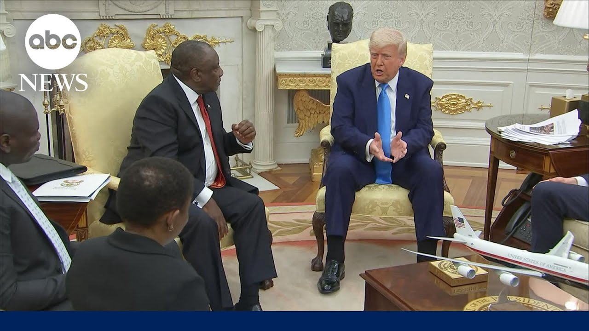

【特朗普对峙南非总统，展示所谓种族灭绝证据】
Summary: The Oval Office meeting between Trump and South African President Ramaphosa escalated into a dispute over Trump's claims of white farmer genocide, despite Ramaphosa's diplomatic efforts and denials.
摘要： 特朗普与南非总统拉马福萨在椭圆形办公室的会晤演变成关于白人农场主遭种族灭绝指控的争论，尽管拉马福萨进行了外交努力并否认该说法。

⏱️ Estimated Reading Time: 9 min
All right, that was an interesting bit of business there in the Oval Office.
好吧，刚才椭圆形办公室里上演了有趣的一幕。
President Trump essentially conducting a show and tell and this high stakes meeting in the Oval Office between President Donald Trump and the South African president Sirill Ramaposa.
特朗普总统基本上是在进行一场“展示与讲述”，这场高风险会晤发生在椭圆形办公室，双方是美国总统唐纳德·特朗普与南非总统西里尔·拉马福萨。
Good afternoon everyone.
大家下午好。
I'm Terry Moran.
我是特里·莫兰。
Those two world leaders uh met amid heightened tension between the two nations after President Trump accused South Africa of allowing race-based genocide to occur against white farmers in that country.
这两位世界领导人的会晤正值两国关系紧张升级之际——此前特朗普总统指责南非纵容针对该国白人农民的种族迫害。
I must tell you, Mr. President, we have had a tremendous number of people, especially since they've seen this, uh generally they're white farmers and they're fleeing South Africa and it's a, you know, it's a very sad thing to see, but uh I hope We can have an explanation of that because I know you don't want that.
我必须告诉您，总统先生，我们收到了大量相关报告——尤其是自从人们目睹这一现象后。呃，主要是那些白人农场主，他们正在逃离南非。您知道的，这种局面令人痛心。不过，呃，我希望我们能就此得到解释，因为我相信您也不愿看到这种情况发生。
South African officials including Ramaposa have vehemently pushed back against these claims.
包括拉马福萨在内的南非官员强烈驳斥了这些说法。
South African native and one of Trump's top adviserss Elon Musk has been amplifying the quote white genocide claims.
南非裔的特朗普高级顾问埃隆·马斯克一直在放大所谓"白人种族灭绝"的指控。
That's what it's called.
他们就是这么称呼的。
This is a a contested issue in South Africa.
这是南非国内存在争议的问题。
White genocide is what it's called.
他们称之为白人种族灭绝。
Uh and he was present.
呃而且他当时在场。
You can see him there.
您可以看到他在那里。
Elon Musk for Ramaposa's visit today.
埃隆·马斯克出席了拉马福萨今天的访问。
So joining me now, senior White House correspondent Selena Wang and our South African producer Leisel Tom.
现在加入我们的是白宫资深记者Selena Wang和我们的南非制片人Leisel Tom。
So Selena, first to you, what a show and tell it was.
那么Selena，首先请问你，这真是一场展示会啊。
Uh these two leaders, they've got different opinions on what's going on with white farmers in South Africa.
呃这两位领导人对南非白人农场主的处境持不同看法。
Uh and what was the actual business that was meant to be conducted here?
呃那么这次会晤原本要讨论的实际议题是什么？
Why is it was was from posted there only to humiliate them or was there actual business being done?
为什么这些内容被公开，只是为了羞辱他们吗？还是确实进行了实质性会谈？
Yeah.
是的。
Well, Terry, first of all, I mean, this was an extraordinary more than oneh hour meeting that we saw play out in front of the public.
嗯，特里，首先，这是一场非同寻常的、持续一个多小时的会议，整个过程都公开进行。
And what was really remarkable was how the South African president carefully planned this out clearly to try and appeal to the president in a variety of ways.
真正值得注意的是南非总统如何精心策划，显然试图通过多种方式取悦特朗普总统。
He started the meeting by praising President Trump, thanking him for the help during the CO 19 pandemic.
他以赞扬特朗普总统开场，感谢他在COVID-19疫情期间提供的帮助。
He brought two professional golfers with him that President Trump is fans of.
他带来了两位特朗普总统喜爱的高尔夫职业选手。
He also said he was gifting the president a 14 kilogram book about golf.
他还表示要赠送总统一本14公斤重的高尔夫书籍。
And really the start of this meeting was very cordial.
实际上会议开始时气氛非常友好。
You had both leaders talking about wanting to enhance economic ties.
两位领导人都谈到希望加强经济联系。
The president of South Africa saying he wanted to deepen investments between these two countries.
南非总统表示希望深化两国间的投资。
But then from there it very quickly devolved into this dispute about these allegations that President Trump and Elon Musk, the South African billionaire, have been making.
但随后很快演变成关于特朗普总统和南非亿万富翁埃隆·马斯克所提出指控的争论。
Despite the South African president trying to convince President Trump that what he said is untrue, the president appeared unmoved.
尽管南非总统试图说服特朗普总统他的说法不实，但总统似乎不为所动。
But at times, Terry, you even had the professional golfers weighing in.
但有时，特里，你甚至看到那些职业高尔夫选手也参与进来。
You had other members of the delegation.
还有其他代表团成员。
There was a striking moment when a reporter asked President Trump, "What would it take for you to believe that there are not these not genocide being committed toward these white farmers?"
有一个引人注目的时刻，当记者问特朗普总统："要怎样才能让您相信没有针对这些白人农场主的种族灭绝行为？"
And the South African president, Terry, actually jumped in and he said that it would take President Trump's friends, some of whom he brought.
而南非总统，特里，实际上插话说，这需要特朗普总统的朋友们——其中一些是他带来的——来说服。
It would take President Trump listening to them to understand that what he believes is untrue.
需要特朗普总统听取他们的意见，才能明白他的看法是不真实的。
And just to point out as well that President Trump ever the producer and chief, he dimmed the light.
还要指出的是，特朗普总统作为制片人兼总指挥，调暗了灯光。
He asked the team to dim the lights.
他要求团队调暗灯光。
At one point, rolled the video to try and bolster his claims.
一度播放视频试图支持他的说法。
You could see that the South African president during that moment was visibly surprised and at one point said he didn't know where these videos were coming from.
可以看到南非总统当时明显感到惊讶，并表示不知道这些视频的来源。
He hadn't seen them.
他从未见过这些视频。
We do not know the source, Terry, of the videos that were played.
我们不知道这些播放的视频来源，特里。
Okay, thank you for that recap.
好的，感谢你的回顾。
Uh that was very helpful, Selena.
呃这非常有帮助，Selena。
Let me go to Leisel now in South Havoc.
现在让我们连线在南非的Leisel。
I I did a story what 10 years ago or more on this problem that white farmers in South Africa have with being there attacks on farms etc etc as someone in South Africa how critical was this is this meeting for that for your country and what did you make of what you just saw Terry this meeting is exceptionally critical because as president from APA said South Africa is a very small country And the US is huge and we need as much help as we can get.
我大约10年前或更早报道过南非白人农场主遭受农场袭击等问题，作为南非人，你认为这次会议对你的国家有多重要？你如何看待刚才看到的情况？特里，这次会议异常重要，因为正如南非总统所说，南非是个很小的国家，而美国非常强大，我们需要尽可能多的帮助。
The issue in South Africa is not white genocide.
南非的问题不是白人种族灭绝。
The issue in South Africa is crime.
南非的问题是犯罪。
If you take into consideration that 75 people are murdered in South Africa every day.
如果考虑到南非每天有75人被谋杀。
Out of every 100,000 people, 45 of them are being killed in South Africa.
每10万人中就有45人在南非被杀。
that is those numbers are very similar to war torn countries.
这些数字与战乱国家非常相似。
So even though we do not have a war in South Africa, we are losing people civilians at the same rate as a country that is actively engaged in war.
因此，尽管南非没有战争，但我们平民的死亡速度与正在经历战争的国家相同。
So South Africa needs help.
所以南非需要帮助。
the US can offer this help and President Trump made it clear that he wants to help solve this problem of the white genocide which is not the real problem.
美国可以提供这种帮助，特朗普总统明确表示他想帮助解决白人种族灭绝问题——但这并非真正的问题。
The real problem is crime which then would lead into discussions of how the US can help South Africa overcome the problem of crime and then the bigger issue behind that is economics.
真正的问题是犯罪，这将引发关于美国如何帮助南非克服犯罪问题的讨论，而背后更大的问题是经济。
South Africa's jobless figures are astronomical.
南非的失业数字高得惊人。
I think we have the highest unemployment rate in the world of almost 40%.
我认为我们有近40%的失业率，是全球最高的。
And that is why we need the US's help to get our economy going to create jobs.
这就是为什么我们需要美国的帮助来推动我们的经济，创造就业机会。
So they this this was a critical meeting as you say leisel Tom thank you very much for explaining that to us and Selena once again thanks for your recap.
因此，正如你所说，这是一次至关重要的会议，Leisel Tom非常感谢你的解释，Selena再次感谢你的回顾。